H₂O · оксид водорода
ВОДА
Свойства, формула
и три состояния
АвторАлекс Хечеян
ЛЁД
ЖИДКОСТЬ
ПАР
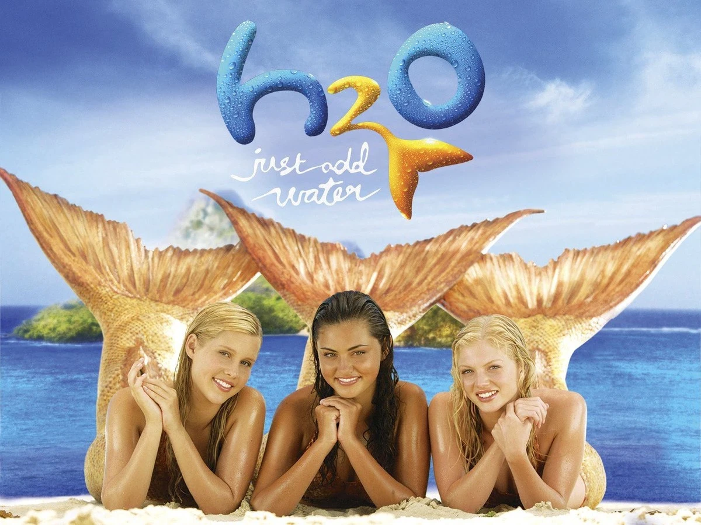
Знакомьтесь
Вода вокруг нас
71%поверхности Земли
покрыто водой
покрыто водой
~60%массы тела человека —
это вода
это вода
97%всей воды на планете —
солёные океаны
солёные океаны
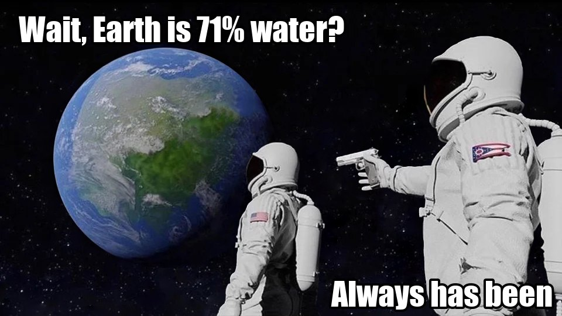
Формула
Из чего состоит вода
H2O
- 2 атома водорода + 1 атом кислорода
- Молярная масса — 18 г/моль
- Связь ковалентная полярная, молекула — диполь
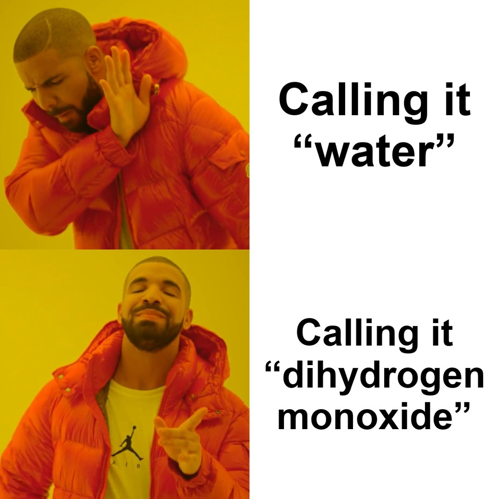
Свойства
Физические свойства
Цветнет
Запахнет
Вкуснет
t° плавления0 °C
t° кипения100 °C
Плотность1 г/см³
💧 Вода — лучший растворитель: в ней растворяются соль, сахар и даже газы.
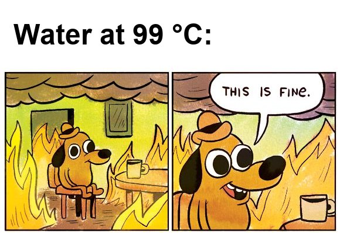
Главное
Три агрегатных состояния
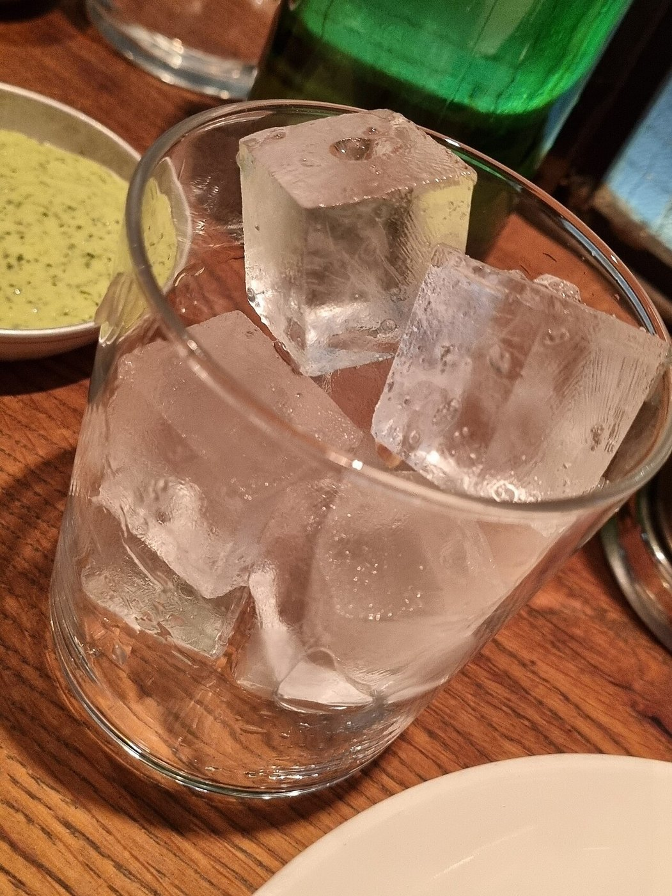
Твёрдоелёд · ниже 0 °C
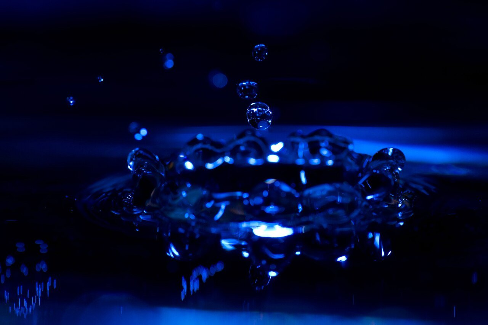
Жидкоевода · 0 … 100 °C
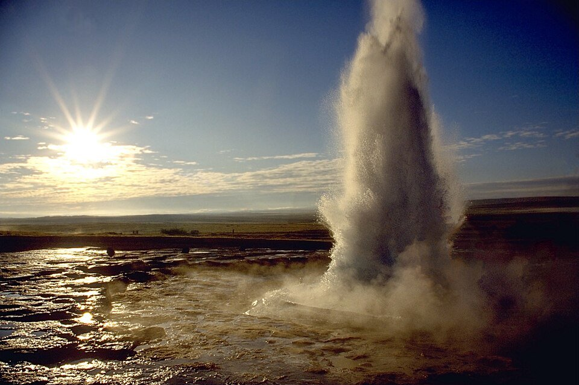
Газообразноепар · выше 100 °C
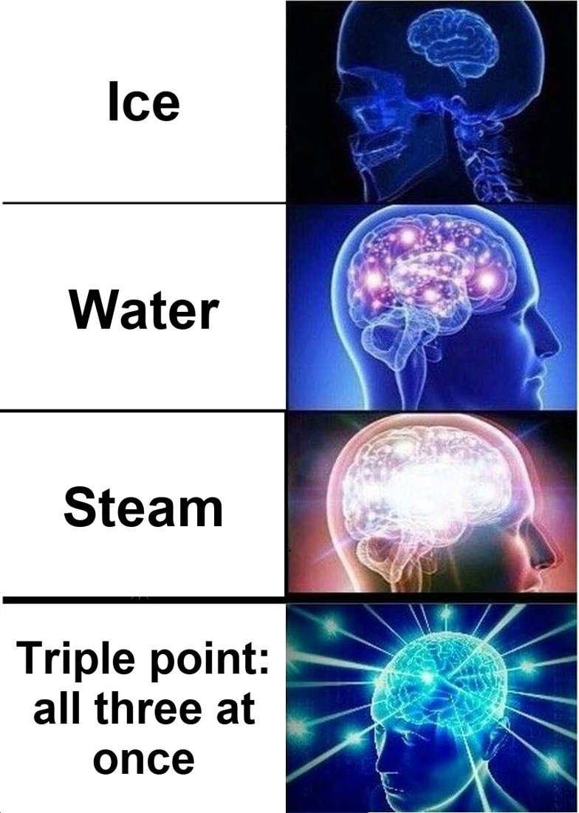
Состояние 1
Лёд
- Твёрдое состояние — ниже 0 °C
- Молекулы стоят в кристаллической решётке из шестиугольников — поэтому у снежинок 6 лучей
- Лёд легче воды (0,92 г/см³), поэтому он плавает
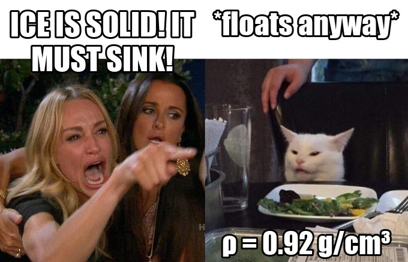
Состояние 2
Жидкость
- Обычная вода — от 0 до 100 °C
- Текучая: принимает форму сосуда, но сохраняет объём
- Молекулы близко, но свободно двигаются
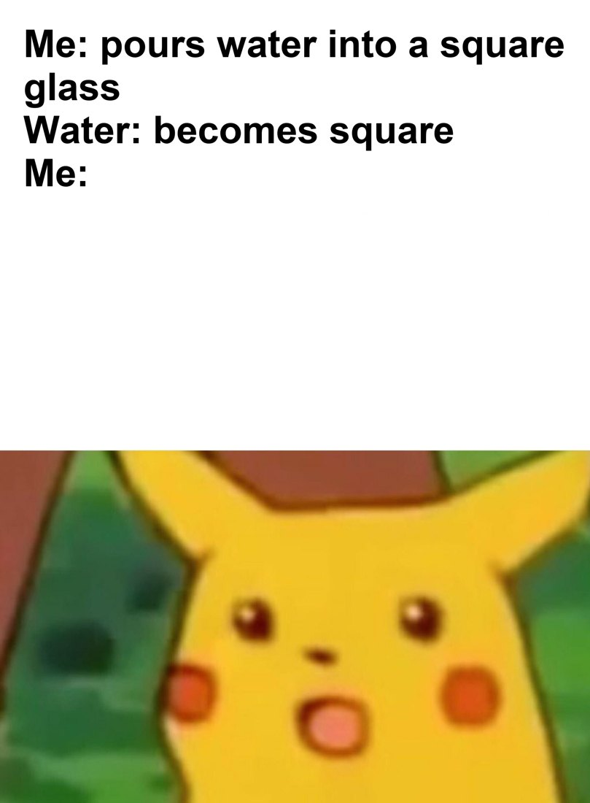
Состояние 3
Пар
- Газ: вода кипит при 100 °C
- Испаряется при любой температуре — поэтому лужи высыхают
- Молекулы далеко друг от друга и летают хаотично
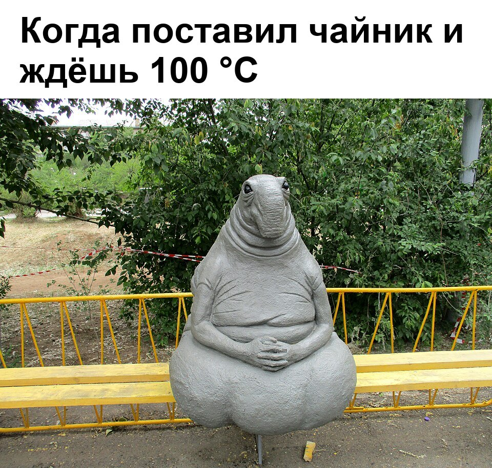
Как вода меняется
Переходы между состояниями
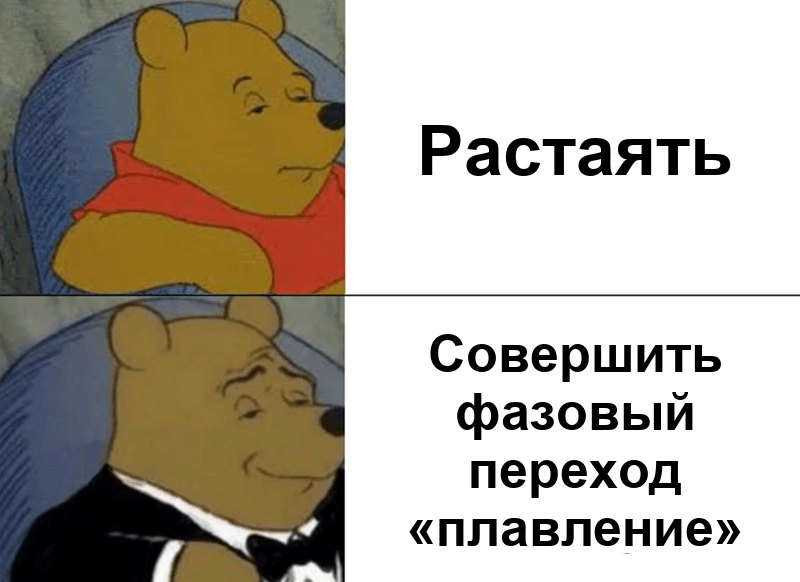
Аномалии
Удивительные свойства
❄Лёд легче водыВодоёмы замерзают сверху — рыбы зимуют подо льдом
💥Расширяется на 9%Замерзая, вода разрывает трубы и бутылки
🌡Самая плотная при +4 °CНа дне озёр зимой всегда около +4 °C
☀Медленно нагреваетсяМоря смягчают климат: летом холодят, зимой греют
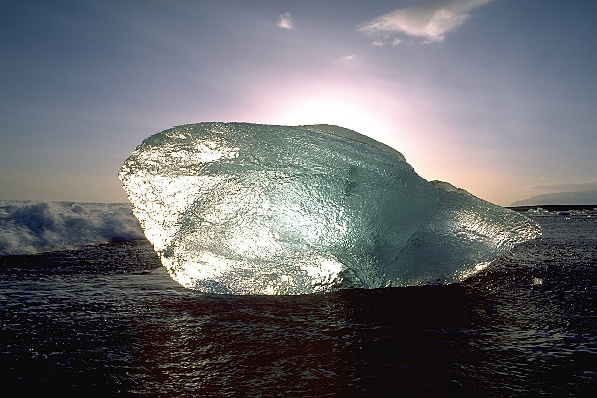
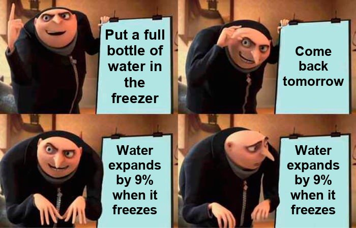
Итог
Выводы
- 01
Вода — H₂O: два водорода и один кислород
- 02
Бывает твёрдой, жидкой и газообразной
- 03
Переходы: плавление, кипение, конденсация, кристаллизация
- 04
Лёд легче воды — и это спасает жизнь в водоёмах
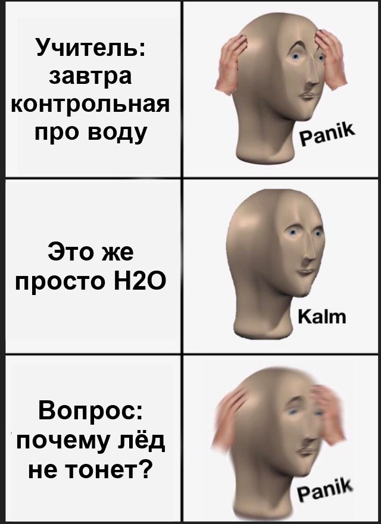
Конец
Спасибо
за внимание!
АвторАлекс Хечеян
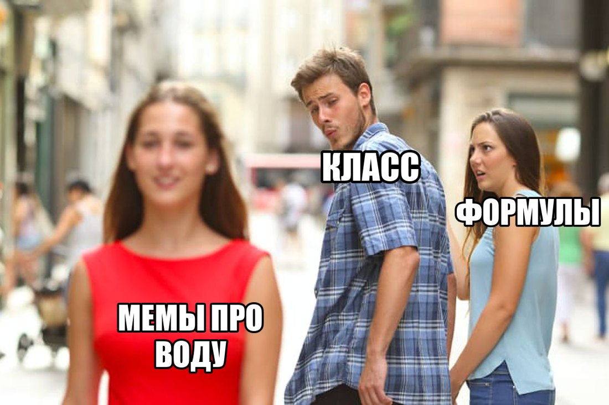
Фото: Wikimedia Commons — «Ice-Cubes» (בר, CC BY-SA 3.0); «Water drop, splash in blue» (gcardinal, CC BY 2.0); гейзер Строккур и глыба льда (Andreas Tille, CC BY-SA 3.0/4.0); «Ждун в Чите» (Andrijko Z., CC BY-SA 4.0). Шаблоны мемов — imgflip.